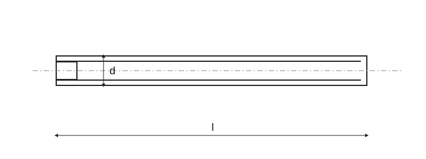

Historical source; numeric values and exceptions have not been fully verified against the current standard.

Own explanatory schematic; not a standard manufacturing drawing. Symbols describe the illustrated type; not every table parameter is drawn.
Slotted set screws with flat point · Dimensions
Slotted set screws with flat point · Dimensions
Slotted set screws with flat point · Dimensions